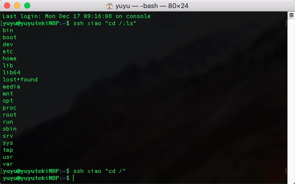
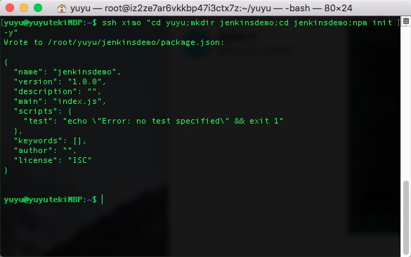
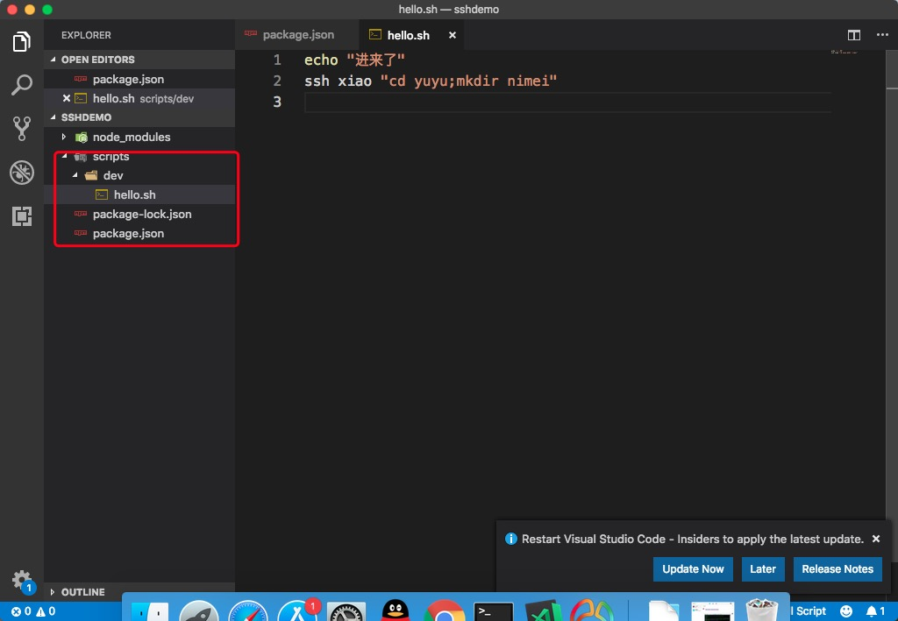
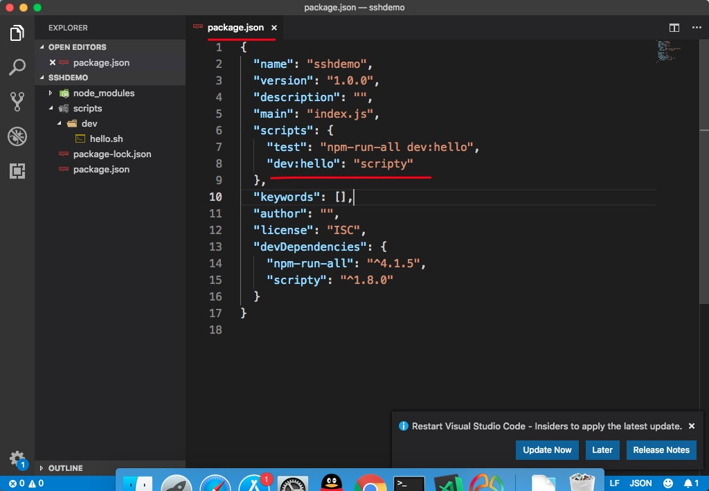
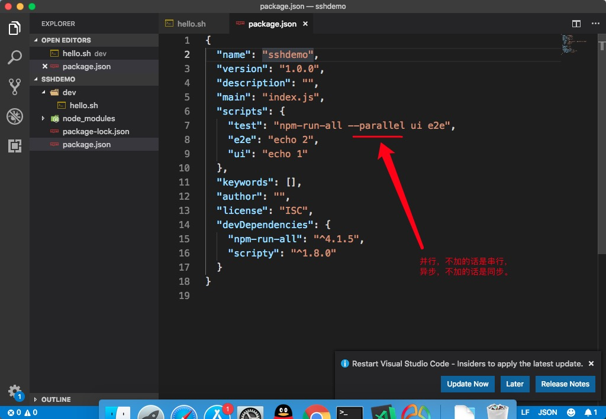
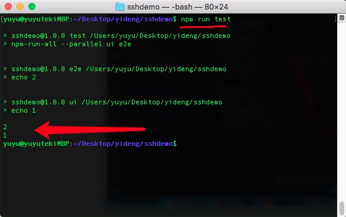
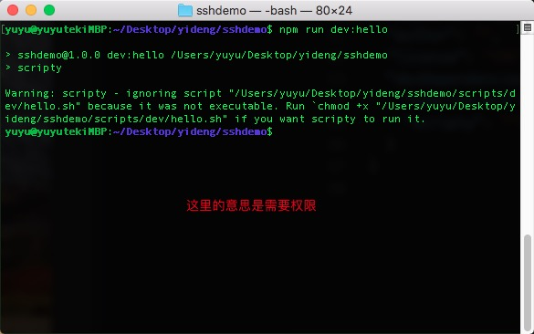

ssh xiao "cd /"
ssh xiao "cd /;ls"

ssh xiao "cd yuyu;mkdir jenkinsdemo;cd jenkinsdemo;npm init -y"

安装scripty，这是一个脚本，可以优化我们所写的package.json中的命令。
npm install --save-dev scripty
项目目录下创建scripts/dev目录，里面创建hello.sh（经过测试发现必须要有scripts目录，否则不会正常运行）
//hello.sh
ssh xiao "cd yuyu;mkdir nimei"
修改package.json
//package.json
"scripts": {
"test": "echo \"Error: no test specified\" && exit 1",
"dev:hello":"scripty"
},
 
安装npm-run-all(这个插件是可以一次性执行多条npm 命令)
npm install npm-run-all --save-dev
 
执行npm run dev:hello就可以启动hello.sh里面的shell脚本命令，从而连接上远程服务器，并创建文件夹,在执行的时候可能会遇到权限问题，我们可以使用sudo chmod -R a+x 文件夹名称 来给文件夹添加权限。如：
sudo chmod -R a+x scripts
